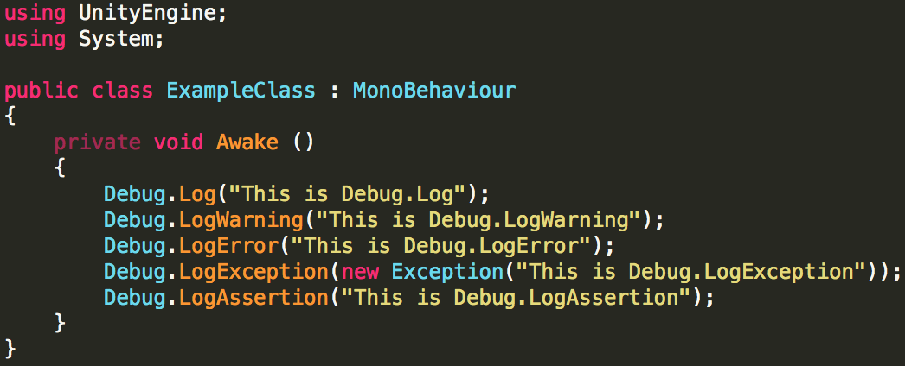
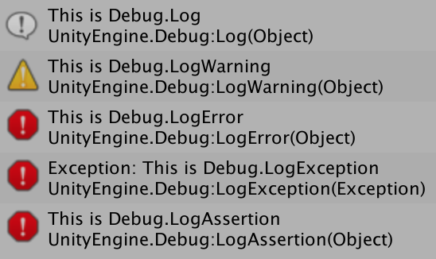
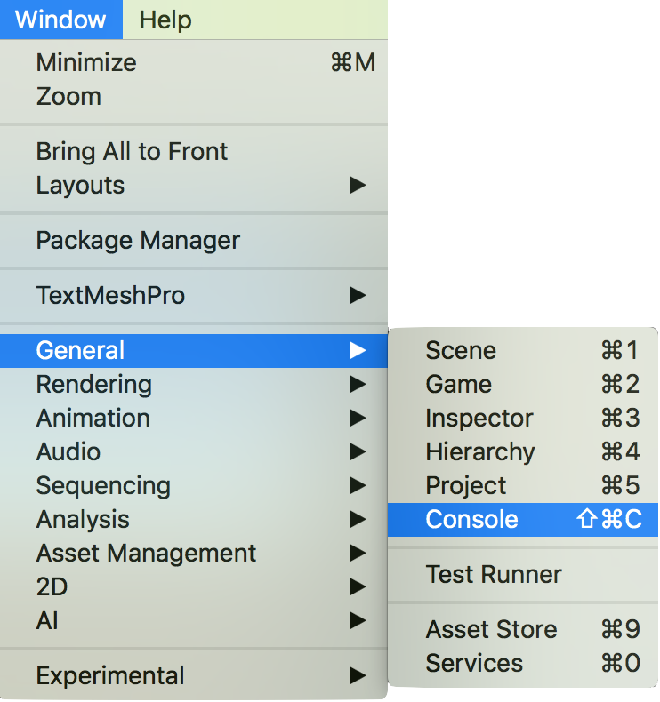
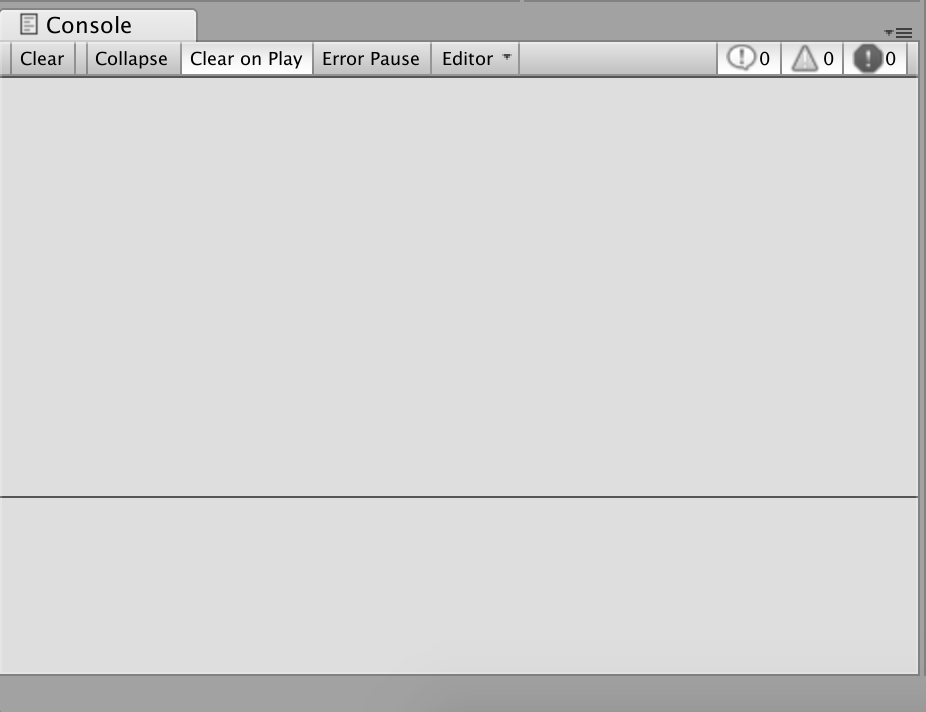
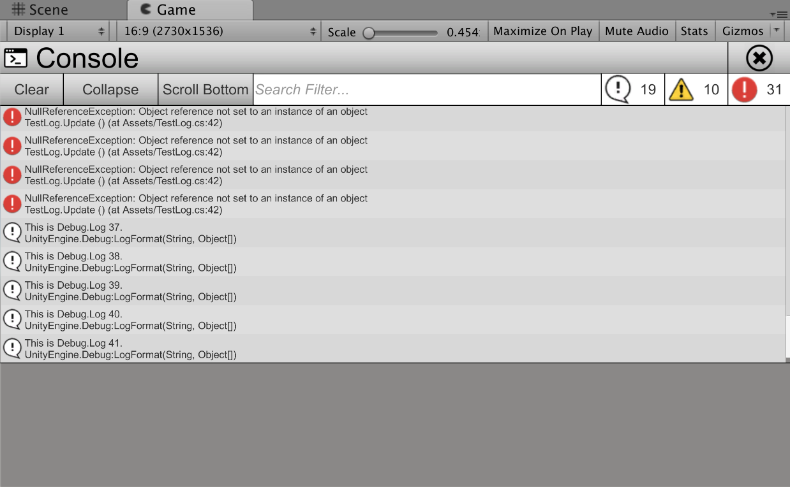
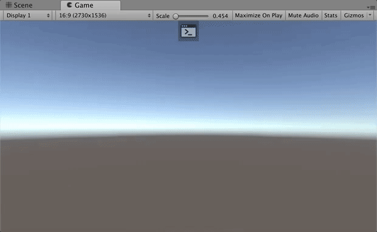

開發各種軟體時，開發者往往會在許多地方埋入日誌 ，以便在執行軟體的過程中輔助辨別軟體的運行狀態。在 Unity 中可以使用 Debug 並在編輯器中搭配 Console 視窗來追蹤開發者、系統所發送的日誌資訊。只要開發者仍在編輯器上進行開發，則能透過 Console 視窗來觀察系統資訊，但也衍生出另一個問題。
當遊戲開發至一定程度時，會開始將遊戲打包並交給 QA 進行測試以確保遊戲品質及 Bug 都能被有效驗證。當 QA 回報問題時，若能提供問題的重現步驟，甚至提供日誌資訊，將大大的降低開發者除錯的難易度。然而 Console 視窗並無法在非編輯器的環境下開啟，導致實機測試時往往需要透過其他方法來擷取這些資訊。
在這篇文章中能夠學到，如何發送日誌、如何觀察日誌、如何獲取日誌。
Unity 提供了方便的日誌工具，有五種類型的日誌可以使用。
| Debug.Log | 發送一般日誌 |
| Debug.LogWarning | 發送警告日誌 |
| Debug.LogError | 發送錯誤日誌 |
| Debug.LogException | 發送例外日誌 |
| Debug.LogAssertion | 發送斷言日誌 |
使用這些 API 後，即可在運行的狀態下取得遊戲的執行資訊。


在 Unity 編輯器中的觀察方法相當簡單。
開啟 MenuItem/Windows/General/Conosle

| 對應功能 | |
| Clear | 清除所有日誌資訊 |
| Collapse | 摺疊日誌資訊，將相同日誌合併 |
| Clear on Play | 開始運行遊戲時清除所有日誌資訊 |
| Error Pause | 出現錯誤日誌時暫停遊戲 |
| Log Toggle | 顯示一般日誌 |
| Warning Toggle | 顯示警告日誌 |
| Error Toggle | 顯示錯誤日誌 |

如同上面所述，Console 視窗只限定於編輯器環境下使用，但能透過其他方法捕捉並獲取這些資訊。
| Application.LogCallback | 搭配 Application.logMessageReceived 及 Application.logMessageReceivedThreaded 的委派方法 |
| Application.logMessageReceived | 在主執行緒中收到日誌訊息時觸發的事件 |
| Application.logMessageReceivedThreaded | 在非主執行緒中收到日誌訊息時觸發的事件 |
using UnityEngine;
using System.Collections.Generic;
public class ExampleClass : MonoBehaviour
{
private class LogData
{
public string LogString;
public string StackTrace;
public LogType LogType;
public LogData(string logString, string stackTrace, LogType logType)
{
LogString = logString;
StackTrace = stackTrace;
LogType = logType;
}
}
private List<LogData> m_logDatas = new List<LogData>();
private string m_onGUIString;
private void Awake ()
{
Application.logMessageReceived += OnLogMessageReceived;
}
private void OnDestroy()
{
Application.logMessageReceived -= OnLogMessageReceived;
}
private void OnLogMessageReceived(string logString, string stackTrace, LogType logType)
{
m_logDatas.Add(new LogData(logString, stackTrace, logType));
if(m_logDatas.Count > 10)
{
m_logDatas.RemoveAt(0);
}
m_onGUIString = string.Empty;
int count = m_logDatas.Count - 1;
for (int i = count; i >= 0; i--)
{
if(i != count)
{
m_onGUIString += "\n";
}
switch(m_logDatas[i].LogType)
{
case LogType.Log:
m_onGUIString += "<color=white>";
break;
case LogType.Warning:
m_onGUIString += "<color=yellow>";
break;
case LogType.Error:
case LogType.Exception:
case LogType.Assert:
m_onGUIString += "<color=red>";
break;
}
m_onGUIString += m_logDatas[i].LogString;
m_onGUIString += "</color>";
}
}
private void OnGUI()
{
GUI.Label(new Rect(0, 0, Screen.width, Screen.height), m_onGUIString);
}
}知道如何獲取日誌資訊後，接下來只要稍加包裝，即可完成在實機上運行的 Runtime Console


Unity – Manual: Console Window
Unity – Scripting API: Debug
Unity – Scripting API: Application.LogCallback
Unity – Scripting API: Application.logMessageReceived
Unity – Scripting API: Application.logMessageReceivedThreaded